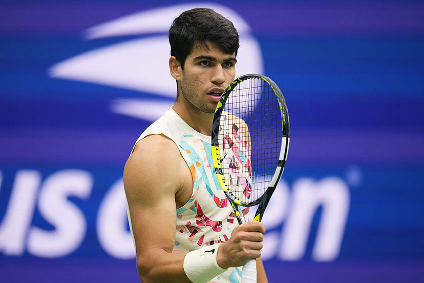
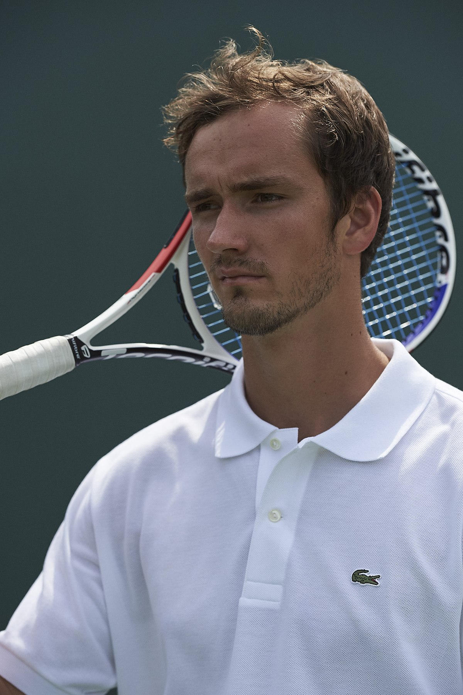
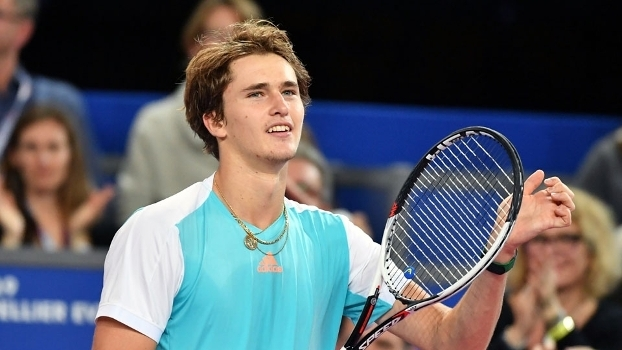
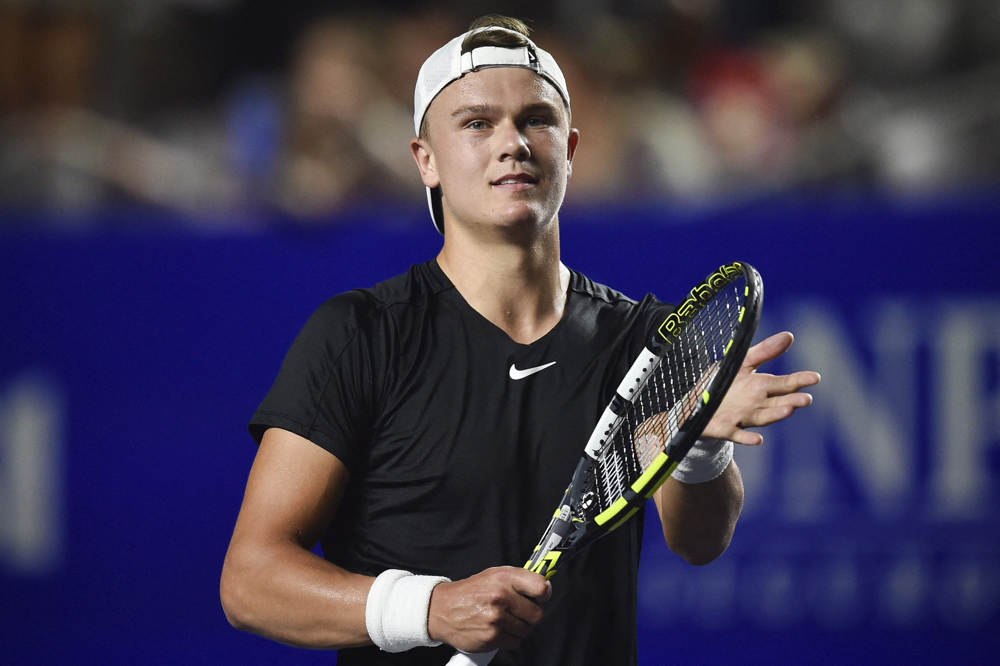
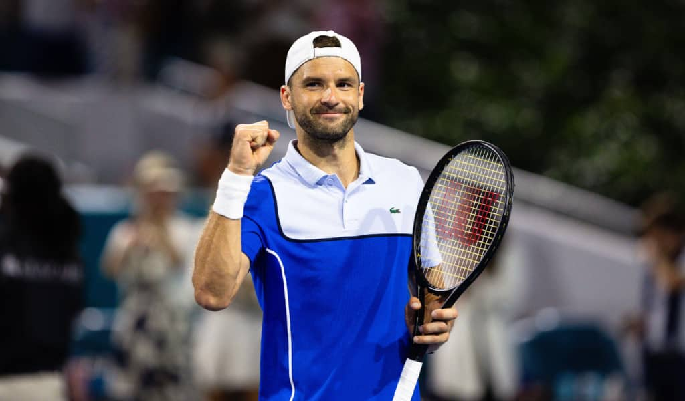

| Foto | Posição | Tenista |
|---|---|---|
| 1º Lugar | Novak Djokovic | |
| 2º Lugar | Jannik Sinner | |
|  | 3º Lugar | Carlos Alcaraz |
|  | 4º Lugar | Daniil Medvedev |
|  | 5º Lugar | Alexander Zverev |
| 6º Lugar | Andrey Rublev | |
|  | 7º Lugar | Holger Rune |
| 8º Lugar | Casper Ruud | |
|  | 9º Lugar | Grigor Dimitrov |
| 10º Lugar | Hubert Hurkacz | Data da pesquisa 08/04/2024 - Fonte: https://revistatenis.uol.com.br/ranking/ranking_atp.html |